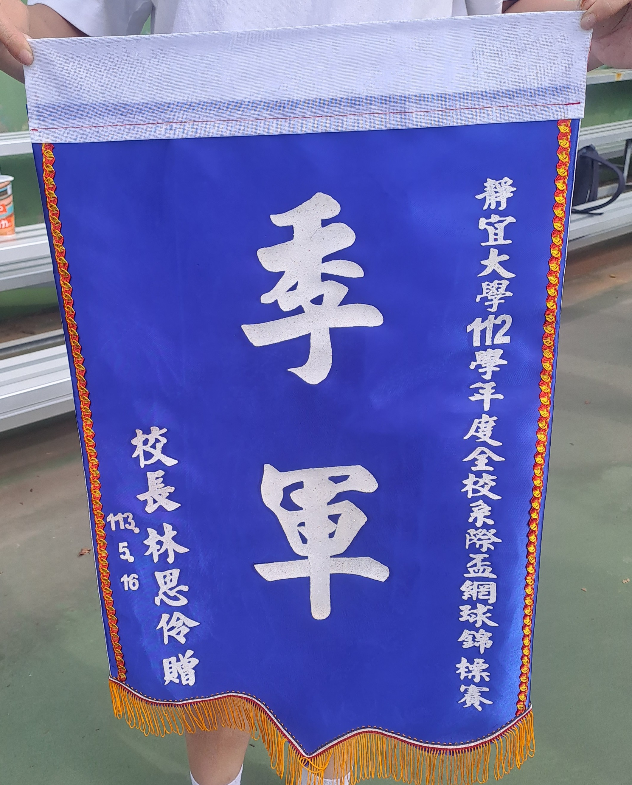

證照
● 2026/05 ICDL-Artificial Intelligence
● 2026/04 Gemini Certified- Educator
● 2026/04 Gemini Certified- University Student
● 2026/04 Gemini Certified- Faculty
● 2025/12 進階ERP規劃師-人力資源管理
● 2025/11 雅思IELTS 等級：B2
● 2025/07 視覺化軟體應用師
● 2025/05 ICDL-MS-Word-2021
● 2025/05 ICDL-Spreadsheets-MSExcel2021
● 2025/05 ICDL-Presentation-MS2021
● 2024/12 ERP 規劃師
● 2023/03 商業管理能力-第二級
● 2023/03 商業管理能力-第三級
● 2022/12 越南語能力檢定 等級：A2
● 2022/10 多益TOEIC 成績：770
● 2021/10 電腦軟體應用技術士
● 2020/11 商業教育英文能力 第二級

比賽
● 2026 靜宜大學 國際學院英語寫作比賽-第一名
● 2025 永續黑客松競賽-參賽
● 2024 行動應用軟體開發-佳作
● 2024 永續黑客松競賽-佳作
● 2024 靜宜大學 網球系際盃 季軍
● 2023 壽山高中 產品廣告製作競賽-最佳影片獎
